A system of equations consists of two or more equations with two or more variables, where any solution must satisfy all of the equations in the system at the same time.
Explain what systems of equations can represent
A system of linear equations consists of two or more linear equations made up of two or more variables, such that all equations in the system are considered simultaneously. To find the unique solution to a system of linear equations, we must find a numerical value for each variable in the system that will satisfy all of the system's equations at the same time. Some linear systems may not have a solution, while others may have an infinite number of solutions. In order for a linear system to have a unique solution, there must be at least as many equations as there are variables. Even so, this does not guarantee a unique solution.
In this section, we will focus primarily on systems of linear equations which consist of two equations that contain two different variables. For example, consider the following system of linear equations in two variables:
The solution to a system of linear equations in two variables is any ordered pair that satisfies each equation independently. In this example, the ordered pair (4, 7) is the solution to the system of linear equations. We can verify the solution by substituting the values into each equation to see if the ordered pair satisfies both equations.
Both of these statements are true, so $(4, 7)$ is indeed a solution to the system of equations.
Note that a system of linear equations may contain more than two equations, and more than two variables. For example,
$3x + 2y - z = 12 \\ x - 2y + 4z = -2 \\ -x + 12y -z = 0 $
is a system of three equations in the three variables $x, y, z$ . A solution to the system above is given by
since it makes all three equations valid.
In general, a linear system may behave in any one of three possible ways:
Each of these possibilities represents a certain type of system of linear equations in two variables. Each of these can be displayed graphically, as below. Note that a solution to a system of linear equations is any point at which the lines intersect.
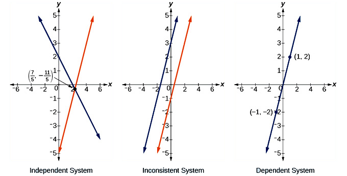Graphical representations of the three types of systems.
An independent system has exactly one solution pair $(x, y)$ . The point where the two lines intersect is the only solution.
An inconsistent system has no solution. Notice that the two lines are parallel and will never intersect.
A dependent system has infinitely many solutions. The lines are exactly the same, so every coordinate pair on the line is a solution to both equations.
A simple way to solve a system of equations is to look for the intersecting point or points of the equations. This is the graphical method.
Solve a system of equations in two variables graphically
A system of equations (also known as simultaneous equations) is a set of equations with multiple variables, solved when the values of all variables simultaneously satisfy all of the equations. The most common ways to solve a system of equations are:
Here, we will address the graphical method.
Some systems have only one set of correct answers, while others have multiple sets that will satisfy all equations. Shown graphically, a set of equations solved with only one set of answers will have only have one point of intersection, as shown below. This point is considered to be the solution of the system of equations. In a set of linear equations (such as in the image below), there is only one solution.
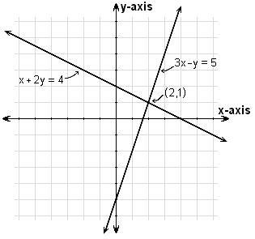This graph shows a system of equations with two variables and only one set of answers that satisfies both equations.
A system with two sets of answers that will satisfy both equations has two points of intersection (thus, two solutions of the system), as shown in the image below.
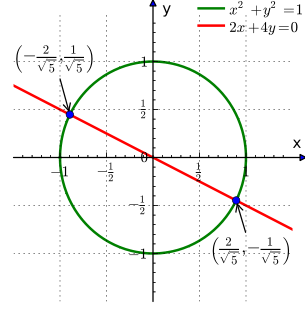This is an example of a system of equations shown graphically that has two sets of answers that will satisfy both equations in the system.
Before successfully solving a system graphically, one must understand how to graph equations written in standard form, or $Ax+By=C$ . You can always use a graphing calculator to represent the equations graphically, but it is useful to know how to represent such equations formulaically on your own.
To do this, you need to convert the equations to slope-intercept form, or $y=mx+b$ , where m = slope and b = y-intercept.
The best way to convert an equation to slope-intercept form is to first isolate the y variable and then divide the right side by B, as shown below.
$\begin{align} \displaystyle Ax+By&=C \\By&=-Ax+C \\y&=\frac{-Ax+C}{B} \\y&=-\frac{A}{B}x+\frac{C}{B} \end{align}$
Now $\displaystyle -\frac{A}{B}$ is the slope m, and $\displaystyle \frac{C}{B}$ is the y-intercept b.
Once you have converted the equations into slope-intercept form, you can graph the equations. To determine the solutions of the set of equations, identify the points of intersection between the graphed equations. The ordered pair that represents the intersection(s) represents the solution(s) to the system of equations.
The substitution method is a way of solving a system of equations by expressing the equations in terms of only one variable.
Solve systems of equations in two variables using substitution
The substitution method for solving systems of equations is a way to simplify the system of equations by expressing one variable in terms of another, thus removing one variable from an equation. When the resulting simplified equation has only one variable to work with, the equation becomes solvable.
The substitution method consists of the following steps:
Let's practice this by solving the following system of equations:
We begin by solving the first equation so we can express x in terms of y.
Next, we will substitute our new definition of x into the second equation:
Note that now this equation only has one variable (y). We can then simplify this equation and solve for y:
Now that we know the value of y, we can use it to find the value of the other variable, x. To do this, substitute the value of y into the first equation and solve for x.
Thus, the solution to the system is: $(-2, -1)$ , which is the point where the two functions graphically intersect. Check the solution by substituting the values into one of the equations.
The elimination method is used to eliminate a variable in order to more simply solve for the remaining variable(s) in a system of equations.
Solve systems of equations in two variables using elimination
The elimination method for solving systems of equations, also known as elimination by addition, is a way to eliminate one of the variables in the system in order to more simply evaluate the remaining variable. Once the values for the remaining variables have been found successfully, they are substituted into the original equation in order to find the correct value for the other variable.
The elimination method follows these steps:
The elimination method can be demonstrated by using a simple example:
First, line up the variables so that the equations can be easily added together in a later step:
Next, look to see if any of the variables are already set up in such a way that adding them together will cancel them out of the system. If not, multiply one equation by a number that allow the variables to cancel out. In this example, the variable y can be eliminated if we multiply the top equation by $-2$ and then add the equations together.
Multiplication step:
Result:
Now add the equations to eliminate the variable y.
Finally, solve for the variable x.
Then go back to one of the original equations and substitute the value we found for x. It is easiest to pick the simplest equation, but either equation will work.
$\displaystyle \begin{align} 4x+y&=8 \\4(1)+y&=8 \\4+y&=8 \\y&=4 \end{align}$
Therefore, the solution of the equation is (1,4). It is always important to check the answer by substituting both of these values in for their respective variables into one of the equations.
For linear equations in two variables, inconsistent systems have no solution, while dependent systems have infinitely many solutions.
Explain when systems of equations in two variables are inconsistent or dependent both graphically and algebraically.
Recall that a linear system may behave in any one of three possible ways:
Also recall that each of these possibilities corresponds to a type of system of linear equations in two variables. An independent system of equations has exactly one solution $(x,y)$ . An inconsistent system has no solution, and a dependent system has an infinite number of solutions.
The previous modules have discussed how to find the solution for an independent system of equations. We will now focus on identifying dependent and inconsistent systems of linear equations.
The equations of a linear system are independent if none of the equations can be derived algebraically from the others. When the equations are independent, each equation contains new information about the variables, and removing any of the equations increases the size of the solution set. Systems that are not independent are by definition dependent. Equations in a dependent system can be derived from one another; they describe the same line. They do not add new information about the variables, and the loss of an equation from a dependent system does not change the size of the solution set.
We can apply the substitution or elimination methods for solving systems of equations to identify dependent systems. Dependent systems have an infinite number of solutions because all of the points on one line are also on the other line. After using substitution or addition, the resulting equation will be an identity, such as $0 = 0$ .
For example, consider the two equations
We can apply the elimination method to evaluate these. If we were to multiply the first equation by a factor of $-2$ , we would have:
$\displaystyle \begin{align} -2(3x+2y&=6) \\-6x-4y&=-12 \end{align}$
Adding this to the second equation would yield $0=0$ . Thus, the two lines are dependent. Also note that they are the same equation scaled by a factor of two; in other words, the second equation can be derived from the first.
When graphed, the two equations produce identical lines, as demonstrated below.
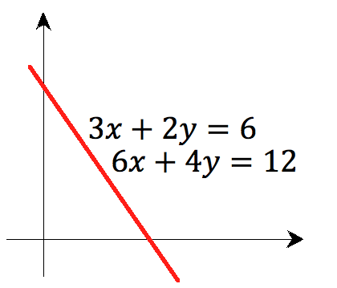The equations $3x + 2y = 6$ and $6x + 4y = 12$ are dependent, and when graphed produce the same line.
Note that there are an infinite number of solutions to a dependent system, and these solutions fall on the shared line.
A linear system is consistent if it has a solution, and inconsistent otherwise. Recall that the graphical representation of an inconsistent system consists of parallel lines that have the same slope but different $y$ -intercepts. They will never intersect.
We can also apply methods for solving systems of equations to identify inconsistent systems. When the system is inconsistent, it is possible to derive a contradiction from the equations, such as the statement $0 = 1$ .
Consider the following two equations:
We can apply the elimination method to attempt to solve this system. Subtracting the first equation from the second one, both variables are eliminated and we get $0 = 6$ . This is a contradiction, and we are able to identify that this is an inconsistent system. The graphs of these equations on the $xy$ -plane are a pair of parallel lines.
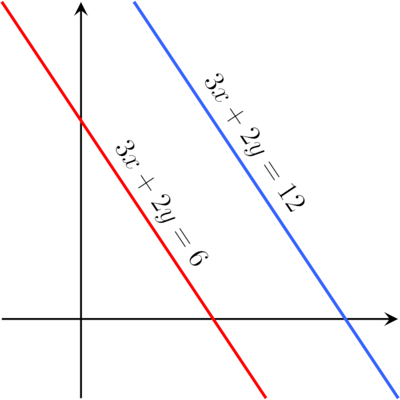The equations $3x + 2y = 6$ and $3x + 2y = 12$ are inconsistent.
In general, inconsistencies occur if the left-hand sides of the equations in a system are linearly dependent, and the constant terms do not satisfy the dependence relation. A system of equations whose left-hand sides are linearly independent is always consistent.
Systems of equations can be used to solve many real-life problems in which multiple constraints are used on the same variables.
Apply systems of equations in two variables to real world examples
A system of equations, also known as simultaneous equations, is a set of equations that have multiple variables. The answer to a system of equations is a set of values that satisfies all equations in the system, and there can be many such answers for any given system. Answers are generally written in the form of an ordered pair: $\left( x,y \right)$ . Approaches to solving a system of equations include substitution and elimination as well as graphical techniques.
There are several practical applications of systems of equations. These are shown in detail below.
A system of equations can be used to solve a planning problem where there are multiple constraints to be taken into account:
Emily is hosting a major after-school party. The principal has imposed two restrictions. First, the total number of people attending (teachers and students combined) must be $56$ . Second, there must be one teacher for every seven students. So, how many students and how many teachers are invited to the party?
First, we need to identify and name our variables. In this case, our variables are teachers and students. The number of teachers will be $T$ , and the number of students will be $S$ .
Now we need to set up our equations. There is a constraint limiting the total number of people in attendance to $56$ , so:
For every seven students, there must be one teacher, so:
Now we have a system of equations that can be solved by substitution, elimination, or graphically. The solution to the system is $S=49$ and $T=7$ .
This next example illustrates how systems of equations are used to find quantities.
A group of $75$ students and teachers are in a field, picking sweet potatoes for the needy. Kasey picks three times as many sweet potatoes as Davis—and then, on the way back to the car, she picks up five more! Looking at her newly increased pile, Davis remarks, "Wow, you've got $29$ more potatoes than I do!" How many sweet potatoes did Kasey and Davis each pick?
To solve, we first define our variables. The number of sweet potatoes that Kasey picks is $K$ , and the number of sweet potatoes that Davis picks is $D$ .
Now we can write equations based on the situation:
From here, substitution, elimination, or graphing will reveal that $K=41$ and $D=12$ .
It is important that you always check your answers. A good way to check solutions to a system of equations is to look at the functions graphically and then see where the graphs intersect. Or, you can substitute your answers into every equation and check that they result in accurate solutions.
There are a multitude of other applications for systems of equations, such as figuring out which landscaper provides the best deal, how much different cell phone providers charge per minute, or comparing nutritional information in recipes.
A system of equations in three variables involves two or more equations, each of which contains between one and three variables.
Solve a system of equations in three variables graphically, using substitution, or using elimination
In mathematics, simultaneous equations are a set of equations containing multiple variables. This set is often referred to as a system of equations. A solution to a system of equations is a particular specification of the values of all variables that simultaneously satisfies all of the equations. Graphically, the solution is where the functions intersect.
In a system of equations in three variables, you can have one or more equations, each of which may contain one or more of the three variables, usually x, y, and z. The introduction of the variable z means that the graphed functions now represent planes, rather than lines.
This is a set of linear equations, also known as a linear system of equations, in three variables:
The solution to this system of equations is:
$\left\{\begin{matrix} x=1\\ y=2\\ z=1\\ \end{matrix}\right.$
Plug in these values to each of the equations to see that the solution satisfies all three of the equations.
The graphical method of solving a system of equations in three variables involves plotting the planes that are formed when graphing each equation in the system and then finding the intersection point of all three planes. The single point where all three planes intersect is the unique solution to the system.
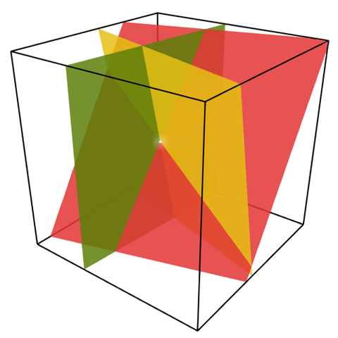This images shows a system of three equations in three variables. The intersecting point (white dot) is the unique solution to this system.
The substitution method of solving a system of equations in three variables involves identifying an equation that can be easily by written with a single variable as the subject (by solving the equation for that variable). Next, substitute that expression where that variable appears in the other two equations, thereby obtaining a smaller system with fewer variables. After that smaller system has been solved, whether by further application of the substitution method or by other methods, substitute the solutions found for the variables back into the first right-hand side expression.
For example, consider this system of equations:
Since the coefficient of z is already 1 in the first equation, solve for z to get:
Substitute this expression for z into the other two equations:
This new system simplifies to:
Now solving for x in the first equation, one gets:
$x=9-4y$ .
Substitute this expression for x into the last equation in the system and solve for y:
Now that you have the value of y, work back up the equation. Plug $y=2$ into the equation $x=9-4y$ to get $x=1$ .
Working up again, plug $(1,2)$ into the first substituted equation and solve for z:
Therefore, the solution to the system of equations is $(1,2,1)$ .
Elimination by judicious multiplication is the other commonly-used method to solve simultaneous linear equations. It uses the general principles that each side of an equation still equals the other when both sides are multiplied (or divided) by the same quantity, or when the same quantity is added (or subtracted) from both sides.
As the equations grow simpler through the elimination of some variables, a variable will eventually appear in fully solvable form, and this value can then be "back-substituted" into previously derived equations by plugging this value in for the variable. Typically, each "back-substitution" can then allow another variable in the system to be solved.
Let's look at the following system:
Using the elimination method, begin by subtracting the first equation from the second and simplifying:
$\displaystyle \begin{align} x-y+3z-(x+y+z)&=4-2 \\-2y+2z&=2 \end{align}$
We now have the following system of equations:
Now subtract two times the first equation from the third equation to get
$\begin {align}2x+2y+z-2(x+y+z)&=3-2(2) \\2x+2y+z-2x-2y-2z&=-1 \\z&=1 \end {align}$
Doing this shows the new system:
Next, subtract two times the third equation from the second equation and simplify:
Doing this shows the new system:
Finally, subtract the third and second equation from the first equation to get
The final, solved system, therefore, is:
Systems of equations in three variables are either independent, dependent, or inconsistent; each case can be established algebraically and represented graphically.
Explain what it means, graphically, for systems of equations in three variables to be inconsistent or dependent, as well as how to recognize algebraically when this is the case
Recall that a solution to a linear system is an assignment of numbers to the variables such that all the equations are simultaneously satisfied. A solution of a system of equations in three variables is an ordered triple $(x, y, z)$ , and describes a point where three planes intersect in space.
There are three possible solution scenarios for systems of three equations in three variables:
We know from working with systems of equations in two variables that a dependent system of equations has an infinite number of solutions. The same is true for dependent systems of equations in three variables. An infinite number of solutions can result from several situations. The three planes could be the same, so that a solution to one equation will be the solution to the other two equations. All three equations could be different but they intersect on a line, which has infinite solutions (see below for a graphical representation). Or two of the equations could be the same and intersect the third on a line (see the example problem for a graphical representation).
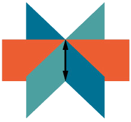An example of three different equations that intersect on a line. Three planes that intersect in one line. Any two planes intersect in a line, and in this scenario the third plane goes through the line formed by the intersection of the first two.
For example, consider this system of equations:
First, multiply the first equation by $-2$ and add it to the second equation:
We do not need to proceed any further. The result we get is an identity, $0 = 0$ , which tells us that this system has an infinite number of solutions. There are other ways to begin to solve this system, such as multiplying the third equation by $-2$ , and adding it to the first equation. We would then perform the same steps as above and find the same result, $0 = 0$ .
If we were to graph each of the three equations, we would have the three planes pictured below. Notice that two of the planes are the same, and they intersect the third plane on a line. The solution set is infinite, as all points along the intersection line will satisfy all three equations.
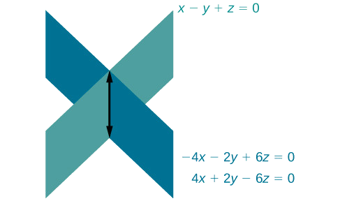Two equations represent the same plane, and these intersect the third plane on a line. The dependent equations -4x - 2y + 6z = 0 and 4x + 2y - 6z = 0 are the same plane, and cross the third plane x - y + z = 0 in a line.
Just as with systems of equations in two variables, we may come across an inconsistent system of equations in three variables, which means that it does not have a solution that satisfies all three equations. The equations could represent three parallel planes, two parallel planes and one intersecting plane, or three planes that intersect the other two but not at the same location. The process of elimination will result in a false statement, such as $3 = 7$ , or some other contradiction.
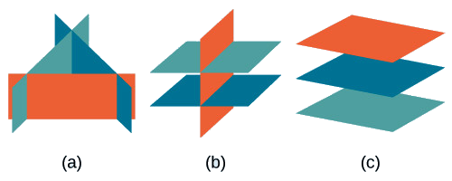All three figures represent three-by-three systems with no solution. (a) The three planes intersect with each other in three different parallel lines, which do not intersect at a common point. (b) Two of the planes are parallel and intersect with the third plane, but not with each other. (c) All three planes are parallel, so there is no point of intersection.
For example, consider the system of equations
Using the elimination method for solving a system of equation in three variables, notice that we can add the first and second equations to cancel $x$ :
Next, multiply the first equation by $-5$ , and add it to the third equation:
Now, notice that we have a system of equations in two variables:
We can solve this by multiplying the top equation by 2, and adding it to the bottom equation:
The final equation $0 = 2$ is a contradiction, so we conclude that the system of equations in inconsistent, and therefore, has no solution.
Graphing linear inequalities involves graphing the original line, and then shading in the area connected to the inequality.
Use graphs to find the solutions of linear inequalities
The simplest inequality to graph is a single inequality in two variables, usually of the form: $y\leq mx+b$ , where the inequality can be of any type, less than, less than or equal to, greater than, greater than or equal to, or not equal to.
Graphing an inequality is easy. First, graph the inequality as if it were an equation. Remember that the solutions to an equation in slope-intercept form are all ordered pairs that satisfy the equation, or make the statement true. Therefore, if an inequality in two variables has an $=$ symbol, then its line too would be solid. If the sign is $\leq$ or $\geq$ , graph a normal solid line. If it is $>$ or $<$ , then use a dotted or dashed line, since ordered pairs found on the line would result in a false statement.
Second, shade either above or below the line, depending on if $y$ is greater or less than $mx+b$ . Shading indicates all the ordered pairs in the region that satisfy the inequality. For example, if the ordered pair is in the shaded region, then that ordered pair makes the inequality a true statement.
Since the equation is less than or equal to, start off by drawing the line $y=x+2$ , using a solid line. Next, note that $y$ is less than or equal to $x+2$ , which means that $y$ can take on the values along the line ("or equal to"), or any values below the line ("less than"), and so we shade in all the values under the line to get the following graph below.
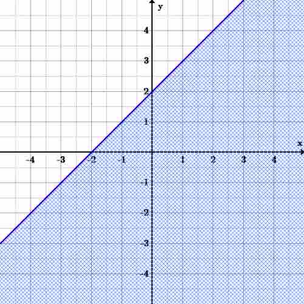Graph of $y\leq x+2$ . All possible solutions (any points below the line) are shaded, including the ordered pairs on the line. Since the inequality is $\leq$ the line is solid. There are no solutions above the line. The line y = x + 2 has positive slope and passes through the points (-2, 0) and (0, 2). It is solid and the area below the line is shaded.
Now if there is more than one inequality, start off by graphing them one at a time, just as was done with a single inequality. To find solutions for the group of inequalities, observe where the area of all of the inequalities overlap. These overlaps of the shaded regions indicate all solutions (ordered pairs) to the system. This also means that if there are inequalities that don't overlap, then there is no solution to the system.
The overlapping shaded area is the final solution to the system of linear inequalities because it is comprised of all possible solutions to $y<-\frac{1}{2}x+1$ (the dotted red line and red area below the line) and $y\geq x-2$ (the solid green line and the green area above the line). The origin is a solution to the system, but the point $(3,0)$ is not. The line y = x - 2 has positive slope and x-intercept 2 and y-intercept -2. The area above this line is shaded. The line y = -1/2x + 1 has negative slope and also has x-intercept 2 and has y-intercept 1. The area below this line is shaded. The area shaded from both lines is the infinite triangular area to the left of x=2, above the first line, and below the second line.
Solving for a system of linear inequalities requires finding values for each of the variables such that all equations are satisfied.
Solve systems of linear inequalities using graphical and non-graphical methods
A system of inequalities is a set of inequalities with multiple variables, often solved with a particular specification of of the values of all variables that simultaneously satisfies all of the inequalities. A system of inequalities can be solved graphically and non-graphically.
Often the easiest way to solve a system of linear inequalities is by graphing. However, graphing is only possible if there are two or three variables in the system.
When using the graphical method for two variables, first plot all of the lines representing the inequalities, drawing a dotted line if it is either < or >, and a solid line if it is either $\leq$ or $\geq$ . Shade, or indicate with hash marks, the area that corresponds to the inequality. For instance, if it is < or $\leq$ , shade in the area below the line. If it is > or $\geq$ shade in the area above the line.
Once all of the inequalities have been drawn and shaded in, the solution to the system is the area in which all of the inequalities overlap each other. For example, given the system:
Draw each of the lines and shade in, or indicate, their corresponding inequalities, and then look to see what parts overlap. The shaded part in the middle is where all three inequalities overlap.
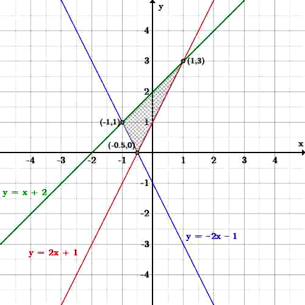Three lines are graphed, with the area that satisfies all three inequalities shaded.
If all of the inequalities of a system fail to overlap over the same area, then there is no solution to that system. For instance, given the following system:
Again, draw all the inequalities and shade in the area that each inequality covers.
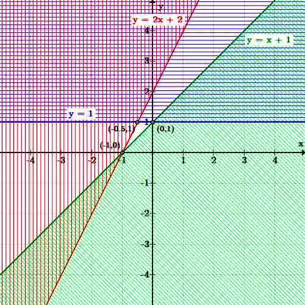Three inequalities are graphed. There is no area which is shaded by all three inequalities, so the system of inequalities has no solution.
Notice that in this graph, there is no part of the graph where all three inequalities overlap. There are plenty of areas where two of the three overlap at a time, but all three must overlap for those points to be a solution to the system.
Sometimes one may not wish to graph the equations, or simply cannot, due to the number of variables. In this situation, find intervals in which certain variables satisfy the system by looking at two equations at a time. This is referred to as the non-graphical method.
First, find the intersection point(s) of two of the equations. If there is no intersection, then the two inequalities are either mutually exclusive, or one of the inequalities is a subset of the other. For a simple example, $x>2$ and $x<1$ are mutually exclusive, whereas $x>2$ and $x>1$ has $x>2$ as a subset of $x>1$ . If they are mutually exclusive, then there is no solution.
To find the intersection point of this system:
first, substitute for $y$ and solve for $ x$ :
Then, substitute a value for $x$ into each inequality to see that it is true. For example, with $x=0$ , the first equation yields $y \geq 0$ , and the second yields $y \leq 1$ . Since these two equations are not mutually exclusive, these two equations are satisfied for any $x \geq -\frac{1}{3}$ .
The non-graphical method is much more complicated, and is perhaps much harder to visualize all the possible solutions for a system of inequalities. However, when you have several equations or several variables, graphing may be the only feasible method.
Linear programming involves finding an optimal solution for a linear equation, given a number of constraints.
Explain the steps of the Simplex Method to solve applications of systems of linear inequalities
A common application of systems of inequalities is linear programming. Linear programming is a mathematical method for determining a way to achieve the best outcome for a list of requirements represented as linear relationships.
An example where linear programming would be helpful to optimize a system of inequalities is as follows:
A factory makes three types of chairs, A, B, and C. The factory makes a profit of \$2 on chair A, \$3 on chair B, and \$4 on chair C. Chair A requires 30 man-hours, chair B requires 20, and chair C requires 10. Chair A needs 2m2 of wood, chair B needs 5m2, and chair C needs 3m2. Given 100 man-hours and 15m2 of wood per week, how many chairs of each type should be made each week to maximize profit?
The most common method in linear programming is the Simplex Method, or the Simplex Algorithm. To use the Simplex Method, we need to represent the problem using linear equations. Let a be the number of A chairs, b the B chairs, and c the C chairs. Then, we can write two linear inequalities where three variables must be non-negative, and all constraints must be satisfied. One linear inequality will show a relationship between the man-hours required for the project, and the other will show the amount of wood needed in the project:
First, an inequality for for man-hours, simplified:
Then, an inequality for materials:
The function to be maximized (the objective function, and in this case, the profit on the chairs) is:
The standard form for the Simplex Method is:
Minimize $c\cdot x$
Subject to: $Ax=b, x_{i}\geq0$
Where $x=[x_{1}, x_{2},..., x_{n}]^{T}$ are the variables, $c=[c_{1}, c_{2},..., c_{n}]$ are the coefficients of the objective function, A is the left-side of the constraints, and $b=[b_{1}, b_{2},..., b_{p}]^{T}$ the right.
The solution of a linear program is accomplished in two steps. In the first step, Phase I, a starting extreme point is found. Phase I either gives a basic feasible solution or no solution. If there is no solution, the linear program is considered infeasible.
In the second step, Phase II, the Simplex Algorithm is applied using the solution found in Phase I as a starting point. The possible results from Phase II are either an optimal solution or an unbounded solution.
You may have noticed that we had been given inequalities, such as $3a+2b+c \leq 10$ , but standard form calls for equalities, or equations. We therefore introduce a slack variable that represents the difference between the two sides of the inequality and is non-negative.
This gives us the new equality:
The other inequality, $2a+5b+3c \leq 15$ , becomes:
Standard form also requires the objective function to be a minimization. If the problem calls for maximization, multiply the objective function by $-1$ .
Here are the pieces for standard form:
A linear program in standard form can be represented as a tableau of the form
where the first row defines the objective function and the remaining rows specify the constraints. If the columns of A can be rearranged so that it contains the p-by-p identity matrix (the number of rows in A), then the tableau is said to be in canonical form. The variables corresponding to the columns of the identity matrix are called basic variables, while the remaining variables are called nonbasic or free variables. If the nonbasic variables are assumed to be $0$ , then the values of the basic variables are easily obtained as entries in b, and this solution is a basic feasible solution.
Moving from one basic feasible solution to an adjacent basic feasible solution is called a pivot. First, a nonzero pivot element is selected in a nonbasic column. The row containing this element is multiplied by its reciprocal to change this element to 1, and then multiples of the row are added to the others to change the other entries in the column to $0$ . The result is that if the pivot is in row $r$ , then the column becomes the $r$ -th column of the identity matrix. The variable for this column is now basic, replacing the variable which corresponded to the $r$ -th column of the identity matrix. The variable corresponding to the pivot column enters the set of basic variables, and the variable being replaced leaves the set of basic variables.
Now, the Simplex Method proceeds by performing successive pivot operations which each improve the basic feasible solution; the choice of pivot element at each step is largely determined by the requirement that this pivot improves the solution.
For the entering variable, choose any column in which the entry in the objective row is positive. If all the entries in the objective row are less than or equal to $0$ , then no choice of entering variable can be made and the solution is optimal.
For the choice of pivot row, only positive entries in the pivot column are considered. This guarantees that the value of the entering variable will be non-negative. If there are none in the pivot column, then the entering variable can take any non-negative value with the solution remaining feasible. Therefore, the objective function is unbounded.
Next, the pivot row must be selected so that all the other basic variables remain positive. This occurs when the resulting value of the entering variable is at a minimum. If the pivot column is c, then the pivot row r is chosen so that $b_{r}/a_{cr}$ is at a minimum.
Using our example, the canonical tableau is:
Columns 5 and 6 are the basic variables s and t, and the basic feasible solution is $a=b=c=0, s=10, t=15$ .
Columns 2, 3, and 4 can be selected as pivot columns; for this example column 4 is selected. The values of x resulting from the choice of rows 2 and 3 as pivot rows are $\frac{10}{1}=10$ and $\frac{15}{3}=5$ respectively. Of these, the minimum is 5, so row 3 must be the pivot row. Performing the pivot produces:
Now columns 4 and 5 represent the basic variables c and s and the corresponding basic feasible solution is:
For the next step, there are no positive entries in the objective row, and in fact:$-P=-20+\frac{2}{3}a+\frac{11}{3}b+\frac{4}{3}t$
So, we should make 5 chairs of type C to maximize our profits with 20 dollars.
{kind=link}
{kind=link}
{kind=link}
{kind=link}
{kind=link}
{kind=link}
{kind=link}
{kind=link}
{kind=link}
{kind=link}
{kind=link}
{kind=link}
{kind=link}